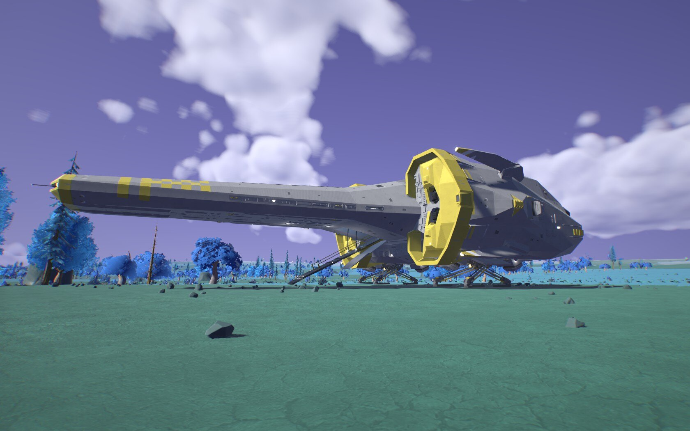
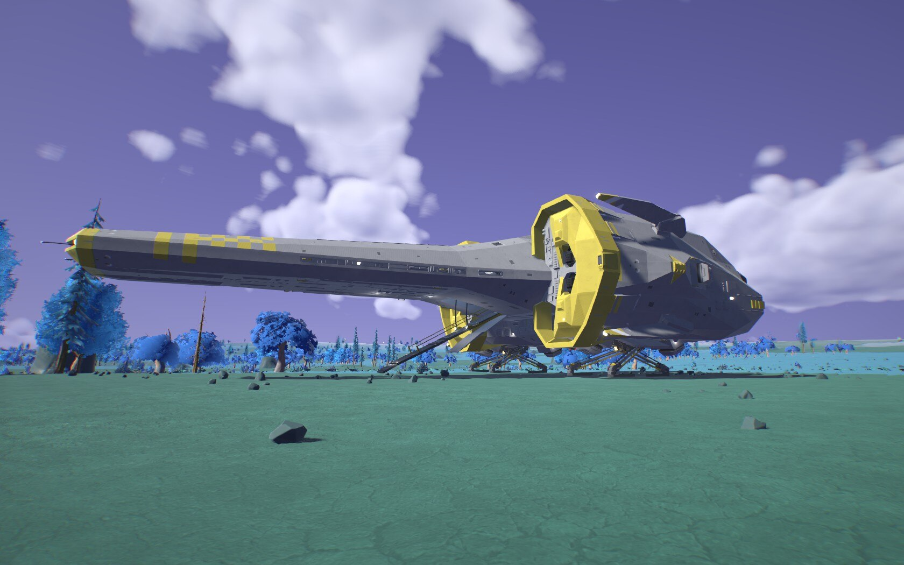
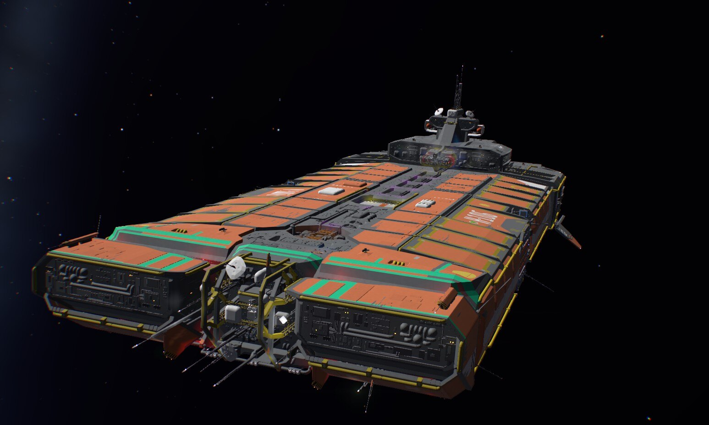
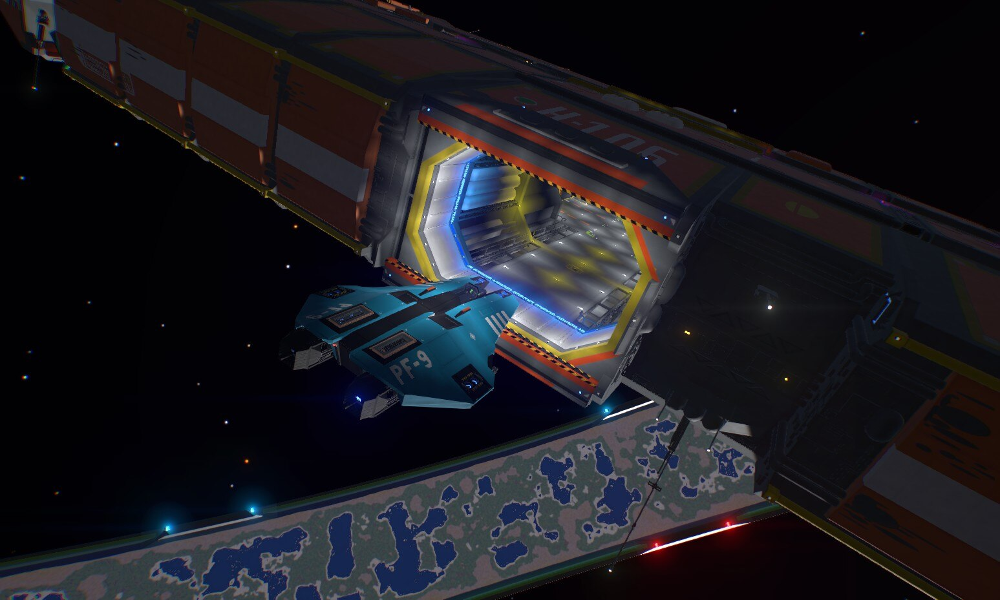
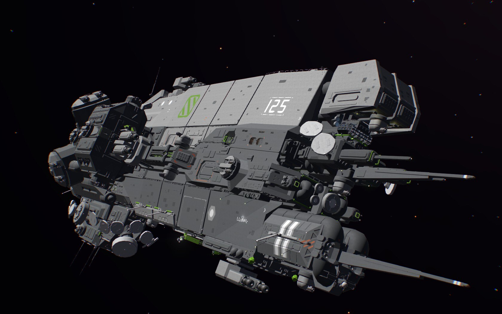
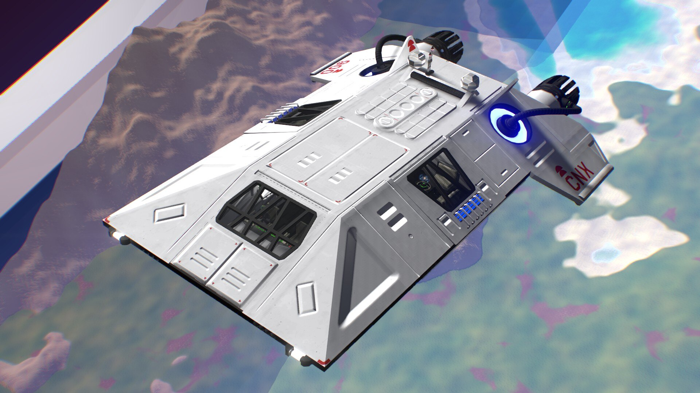
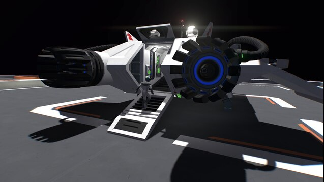
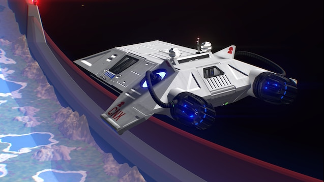

Galactic Grid Site Plan
The Galactic Grid website is a basic review blog site for Starship Evo. the audience for this website will be those looking to see what the best ships builds are in the game starship evo. I will focus each blog on a starship review. Each review will have a title, a main body text. Each review will have a total of three images: one main image and three secondary images. All the reviews will be held in a javascript object data bank and will be displayed dynamically on the child page. A review card will be displayed on the main home page that if clicked will take the user to the child page and the full article will be displayed. A search bar will be located on the main page to allow the user to find specific reviews.
Logo

hero image

Font will be "Open Sans"
Website content
CV-27 Hammerhead Corvette

TwoNiner's CV-27 Hammerhead Corvette is a formidable vessel that commands attention. Its imposing silhouette, bristling with weaponry, immediately signals its power. This ship isn't just a pretty face; it's a well-engineered beast, capable of holding its own in any aerial engagement. The level of detail poured into this ship is simply astounding. Every nook and cranny of the interior has been meticulously crafted, resulting in a truly immersive experience. The way certain hallways seem to bend and twist in impossible directions is a testament to the creator's ingenuity. One of the Hammerhead's most impressive features is its accessibility. Players can access every turret without ever leaving the safety of the ship's interior. This thoughtful design choice enhances both gameplay and immersion. However, the ship's underslung bridge, while visually striking, can limit visibility. Navigating the battlefield and monitoring the ship's performance can be challenging without resorting to the third-person camera. Despite this minor drawback, the Hammerhead Corvette is a masterpiece of starship design. Its blend of power, beauty, and functionality makes it a must-have for any serious space captain.


Creator TwoNiner
LG-890 Makaira Starcruiser

TwoNiner's CV-27 Hammerhead Corvette is a formidable vessel that commands attention. Its imposing silhouette, bristling with weaponry, immediately signals its power. This ship isn't just a pretty face; it's a well-engineered beast, capable of holding its own in any aerial engagement. The level of detail poured into this ship is simply astounding. Every nook and cranny of the interior has been meticulously crafted, resulting in a truly immersive experience. The way certain hallways seem to bend and twist in impossible directions is a testament to the creator's ingenuity. One of the Hammerhead's most impressive features is its accessibility. Players can access every turret without ever leaving the safety of the ship's interior. This thoughtful design choice enhances both gameplay and immersion. However, the ship's underslung bridge, while visually striking, can limit visibility. Navigating the battlefield and monitoring the ship's performance can be challenging without resorting to the third-person camera. Despite this minor drawback, the Hammerhead Corvette is a masterpiece of starship design. Its blend of power, beauty, and functionality makes it a must-have for any serious space captain.
 

Creator Dolan
H-106 Kodashi - E900 Bulk Freighter

TwoNiner's CV-27 Hammerhead Corvette is a formidable vessel that commands attention. Its imposing silhouette, bristling with weaponry, immediately signals its power. This ship isn't just a pretty face; it's a well-engineered beast, capable of holding its own in any aerial engagement. The level of detail poured into this ship is simply astounding. Every nook and cranny of the interior has been meticulously crafted, resulting in a truly immersive experience. The way certain hallways seem to bend and twist in impossible directions is a testament to the creator's ingenuity. One of the Hammerhead's most impressive features is its accessibility. Players can access every turret without ever leaving the safety of the ship's interior. This thoughtful design choice enhances both gameplay and immersion. However, the ship's underslung bridge, while visually striking, can limit visibility. Navigating the battlefield and monitoring the ship's performance can be challenging without resorting to the third-person camera. Despite this minor drawback, the Hammerhead Corvette is a masterpiece of starship design. Its blend of power, beauty, and functionality makes it a must-have for any serious space captain.
 Creator Dolan
Tepez Class Cruiser
TwoNiner's CV-27 Hammerhead Corvette is a formidable vessel that commands attention. Its imposing silhouette, bristling with weaponry, immediately signals its power. This ship isn't just a pretty face; it's a well-engineered beast, capable of holding its own in any aerial engagement. The level of detail poured into this ship is simply astounding. Every nook and cranny of the interior has been meticulously crafted, resulting in a truly immersive experience. The way certain hallways seem to bend and twist in impossible directions is a testament to the creator's ingenuity. One of the Hammerhead's most impressive features is its accessibility. Players can access every turret without ever leaving the safety of the ship's interior. This thoughtful design choice enhances both gameplay and immersion. However, the ship's underslung bridge, while visually striking, can limit visibility. Navigating the battlefield and monitoring the ship's performance can be challenging without resorting to the third-person camera. Despite this minor drawback, the Hammerhead Corvette is a masterpiece of starship design. Its blend of power, beauty, and functionality makes it a must-have for any serious space captain.


Creator Dolan
Crescentwo CNX 900 Pancake
TwoNiner's CV-27 Hammerhead Corvette is a formidable vessel that commands attention. Its imposing silhouette, bristling with weaponry, immediately signals its power. This ship isn't just a pretty face; it's a well-engineered beast, capable of holding its own in any aerial engagement. The level of detail poured into this ship is simply astounding. Every nook and cranny of the interior has been meticulously crafted, resulting in a truly immersive experience. The way certain hallways seem to bend and twist in impossible directions is a testament to the creator's ingenuity. One of the Hammerhead's most impressive features is its accessibility. Players can access every turret without ever leaving the safety of the ship's interior. This thoughtful design choice enhances both gameplay and immersion. However, the ship's underslung bridge, while visually striking, can limit visibility. Navigating the battlefield and monitoring the ship's performance can be challenging without resorting to the third-person camera. Despite this minor drawback, the Hammerhead Corvette is a masterpiece of starship design. Its blend of power, beauty, and functionality makes it a must-have for any serious space captain.
 Creator Trashprince